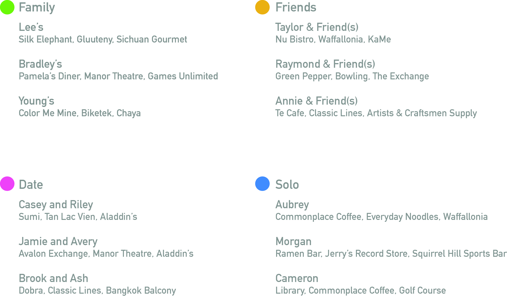
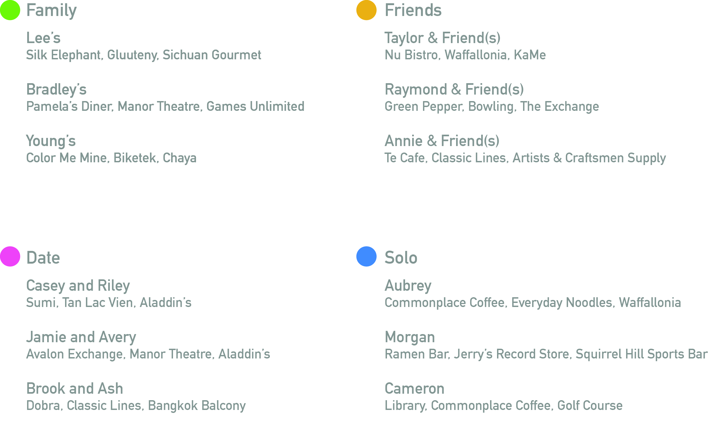

Exploring Squirrel Hill
Challenge
Create a wayfinding device that uses speech recognition as the sole form of input.
Outcome
A kiosk that recommends day trip itineraries in Squirrel Hill based on visitors' party size, interests and amount of available time to help them discover what the neighborhood has to offer.
Role & Contributions
Storyboarding
Wireframing
Graphics
Motion
Teammates
Alex Tsai
Sharon Yu
Screen cap walkthrough:


Background
Squirrel Hill is a residential neighborhood in Pittsburgh, PA that is a one stop shop for entertainment, food, and shopping. It offers a diverse range of experiences, with kosher brunch and soup dumplings on the same street. Recognizing that college students and other visitors typically frequent the same popular restaurants and shops in the area, we wanted our wayfinding device to bring attention to the lesser known "hidden gems" of the place.
Process
Information Structure
In order to recommend trips for places less traveled, we perused Yelp to make a list of possible destinations. Based on the kinds of activities we found, we constructed some personas which we loosely defined as people who like food, people who like excitement and new experiences, and people who enjoy quieter or intellectual activities.
We then wanted to identify the type of trip the visitor is having: a solo adventure, hanging out with friends, going on a date, or a spending time with family. We drew up a list of activities for each type of group/individual.
Finally, based on the amount of time they want to spend in the neighborhood, we provided some or all of the items on the list as recommendations.
 



Creating Content
We used p5.js to code the speech recognition functions and animate interactions. Considering the free-forming nature of human speech and how much room there is for error, we were careful to set up questions to receive one-word responses. The interface itself supplements the questions with visual feedback to acknowledge the user's input and with playful graphics. Each step is simple and gives clear instructions. After the user confirms a satisfactory route, the kiosk displays a QR code to pull up Google Maps with directions to these places on the user's phone.
Below are character designs and animations I created, used as assets in our interface.


Form Considerations
We decided to make it an on-site kiosk because they are easily accessible for public use. We steered away from creating an app because we didn't want visitors to have to download something for likely one-time use. We felt that one-word responses would also mitigate the potential interference from background noise. Further, given the minimal number of steps required to get an itinerary, we guessed that lines and crowds around the kiosk would not be an issue.
Learning Outcomes
- Taking consideration for the context of a physical environment when designing a product
- Navigating the affordances and limitations of a speech recognition interface
- Using the p5 JavaScript library, creating bouncing circles, animated gifs, and transition screens
Reflection
The speech-based interface was an assigned constraint, so I got to think about interactions that were more particular to a voice UI. For example, we realized that the chances of error with voice input were high, so we designed for one-word answers. To do this, we needed to clearly define the information we were asking at each step.